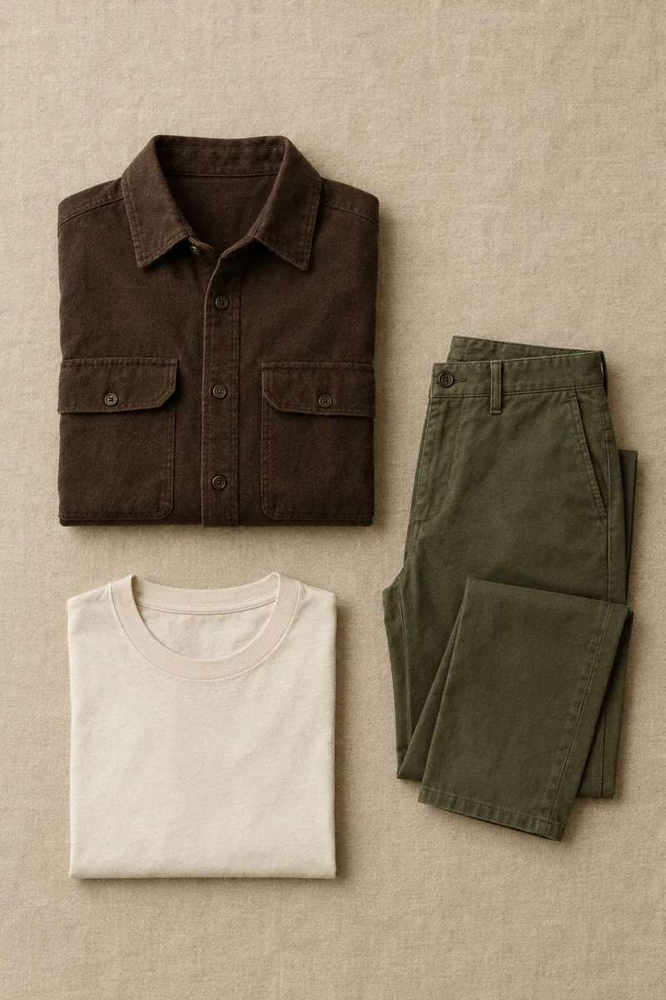
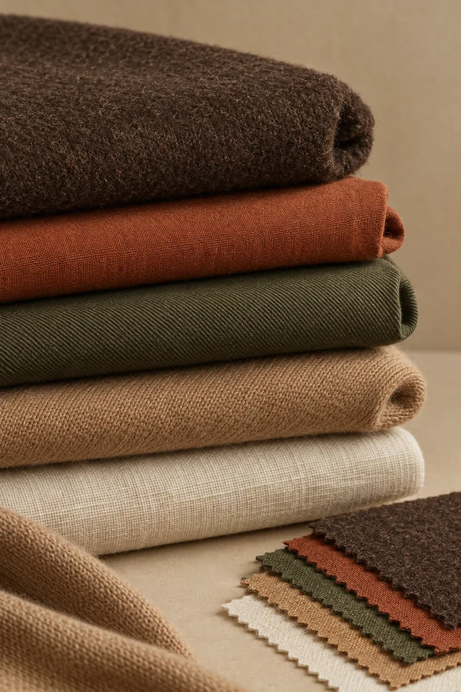
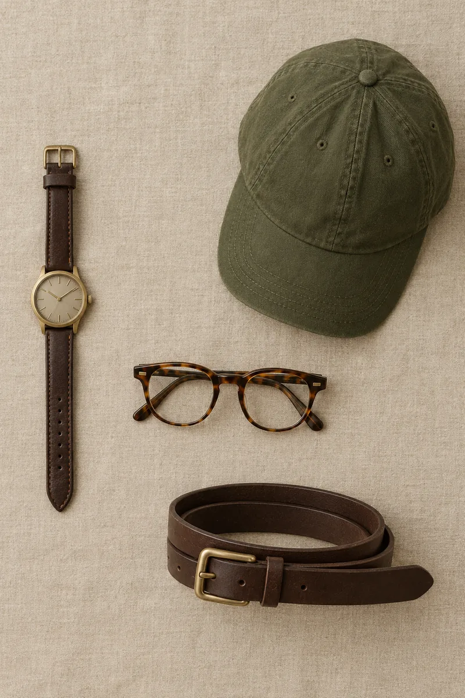

Personal Style Hub
Guida d'immagine personale per l'equilibrio cromatico, le proporzioni fisiche e il grooming.

Il Tuo Profilo
Stagione: Autunno
Forma del viso: —
Consigli Chiave di Stile
Colore vicino al viso: Prediligi i toni guida della tua stagione.
Slanciare la figura: Infila la maglia nei pantaloni (tuck-in) e usa pantaloni a vita media/alta per allungare le gambe.
Grooming Viso: Mantieni i lati dei capelli corti o sfumati (Taper Fade) per allungare il profilo e ridurre l'ampiezza delle guance.
Combo Cromatica della Settimana
L'abbinamento chiave per la tua stagione nello Smart Streetwear:
Guardaroba Capsule

Una base di capi versatili da combinare, in toni coerenti con l'Autunno Profondo:
- Sopracamicia in camoscio o cotone spesso — Moka, Oliva, Terracotta
- T-shirt pesanti a manica lunga — Panna, Oliva, Bordeaux
- Chino a vita media/alta con pinces — Beige caldo, Grigio carbone
- Maglione girocollo in lana — Senape, Verde foresta, Moka
- Trench o giacca campo — Cammello o Oliva
- Scarpe in cuoio marrone — Derby o Chukka
Guide da Esplorare

Capelli e barba su misura
Le linee che valorizzano il tuo viso: volume laterale, barba curata, texture definita.
Vai al selettore Grooming →
Accessori che completano tutto
Orologio, occhiali tartarugati, cappellino oliva: i dettagli caldi legano l'outfit.
Vedi la guida Accessori →Sezioni Principali
Calcolatore Proporzioni Fisiche
Analisi Viso & Grooming
Palette Cromatica Universale
Regole Colore per la Tua Stagione
Regole Colore & Capi
Promossi vicino al viso: Moka, Terracotta, Ottanio, Verde Foresta, Panna/Avorio.
Da evitare vicino al viso: Bianco ottico puro, Grigio ghiaccio, Viola freddo, Blu elettrico.
Capi chiave Smart Streetwear: Sopracamicie in camoscio/cotone spesso, Chino a vita media/alta con pinces, Trench cammello o oliva.
Accessori & Dettagli
Esempi in toni caldi autunnali: adatta materiali e colori alla tua stagione.
- Orologi: Cassa in bronzo, ottone spazzolato o nero opaco con cinturino in pelle moka o cuoio.
- Occhiali: Montature tartarugate ambrate o in acetato verde oliva/marrone.
- Cappelli: Dad hat classici in verde oliva, ruggine o moka.
- Metalli: Oro giallo satinato, bronzo o argento invecchiato brunito.